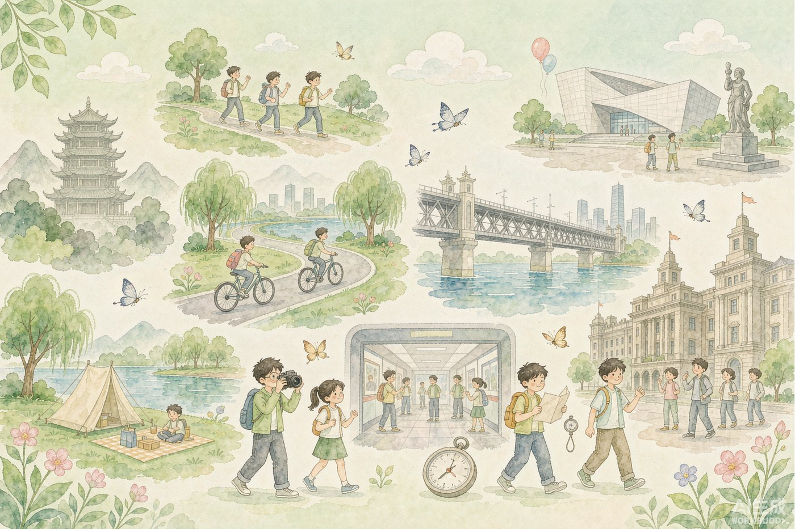

AI 手绘示意底图
武汉好玩景点日报
2026-10-16 ｜ 🧭 今日主题：小众秘境 ｜ 小红书一手笔记 · 每天 09:15 自动更新
5 篇精选
12 篇候选
11 处避坑
出发地：
江汉路（示例）
今天值得看的 5 篇
落点与距离 · 高德坐标
坐标来自
高德地图 POI 检索
：原文写了明确地点的落
店铺级
，只写位置没写地点/未被高德收录的落
商圈级
；距离为自示例出发地
江汉路
的直线距离。**全国小众词**（长假使用）日报的出发地参考江汉路，**异地笔记距离仅作长途量级参考**，不做日常决策距离；卡片以"异地 · ≈xxx km"标注，地图上对应 pin 为浅绿色。